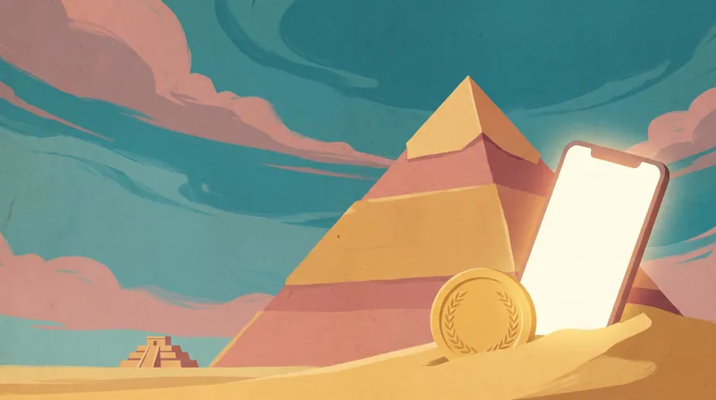
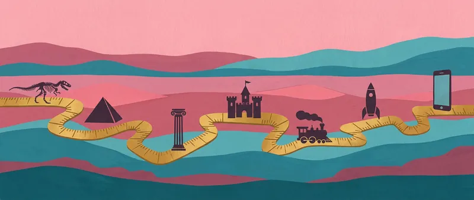
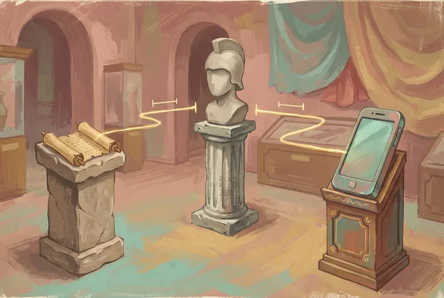

Someone sent you this one. They bet you get it wrong.
Which two are closer in time?

Tap two cards.

Where these dates come from
All 101 answers (spoilers)
Cleopatra lived closer in time to the iPhone than to the building of the Great Pyramid.
The first iPhone goes on sale: 2007Cleopatra is born: 70 or 69 BCThe Great Pyramid of Giza is built: c. 2600 BC
T. rex is closer in time to you than to Stegosaurus.
Stegosaurus walks the Earth: 155–145 million years agoYou, reading this: 2026Tyrannosaurus rex walks the Earth: 68–66 million years ago
Woolly mammoths were still alive when the Great Pyramid went up.
The last woolly mammoths die out: c. 2000 BC (about 4,000 years ago)The Great Pyramid of Giza is built: c. 2600 BCThe Colosseum opens in Rome: AD 80
The Ottoman Empire was still around 6 years before Mickey Mouse.
The Ottoman sultanate is abolished: 1922Mickey Mouse debuts in Steamboat Willie: 1928The Ottoman Empire is founded: c. 1299
Samurai were still fighting a year after the telephone was patented.
The Battle of Sekigahara: 1600The last samurai revolt (Satsuma Rebellion): 1877Bell patents the telephone: 1876
The Roman Empire (its eastern half) lasted until the age of the printing press.
Constantinople falls to the Ottomans: 1453The last Western Roman emperor is deposed: 476The Gutenberg Bible is printed: c. 1455
Machu Picchu was only about 40 years old when Columbus sailed.
The Colosseum opens in Rome: AD 80Machu Picchu is built: c. 1450Columbus reaches the Americas: 1492
Vikings were in America 471 years before Columbus.
The Battle of Hastings: 1066Columbus reaches the Americas: 1492Vikings are cutting wood in Newfoundland: 1021
France still used the guillotine the year Star Wars came out.
France's last execution by guillotine: 1977Star Wars opens in cinemas: 1977The storming of the Bastille: 1789
People had batteries before anyone had seen Antarctica.
Volta builds the first battery: 1799–1800Magellan's crew finishes the first trip around the world: 1522People first see Antarctica: 1820
The Taj Mahal is younger than the Mayflower landing.
The Mayflower lands at Plymouth: 1620Work begins on the Taj Mahal: 1632Machu Picchu is built: c. 1450
The shark family tree is older than trees.
The earliest shark relatives swim the seas: over 420 million years agoTyrannosaurus rex walks the Earth: 68–66 million years agoThe first trees: c. 385 million years ago
Stonehenge and the Great Pyramid went up at about the same time.
Rome is founded (by tradition): 753 BCStonehenge's big sarsen circle goes up: c. 2500 BCThe Great Pyramid of Giza is built: c. 2600 BC
The first powered flight is closer to the Civil War than to the Moon landing.
The Wright brothers make the first powered flight: 1903The American Civil War ends: 1865Apollo 11 lands on the Moon: 1969
Stonehenge is closer in time to us than to Göbekli Tepe.
Stonehenge's big sarsen circle goes up: c. 2500 BCGöbekli Tepe, the oldest known temple, is built: c. 9500 BCYou, reading this: 2026
Roman Egypt had a coin-operated vending machine about 1,800 years before the first modern ones in England.
Göbekli Tepe, the oldest known temple, is built: c. 9500 BCThe first modern coin vending machines appear in England: early 1880sHero of Alexandria describes a coin-operated vending machine: 1st century AD
An ancient Greek computer is closer in time to ENIAC than to the Iceman.
The Antikythera mechanism (an ancient Greek analog computer) is made: c. 150–100 BCÖtzi the Iceman dies in the Alps: c. 3300 BCENIAC, the first general-purpose electronic computer, is finished: 1945
The Easter Island statues were carved after work began on Notre-Dame.
The Easter Island statues (moai) are carved: c. 1250–1500Ötzi the Iceman dies in the Alps: c. 3300 BCThe first stone of Notre-Dame de Paris is laid: 1163
China's Terracotta Army is closer in time to the Moon landing than to the invention of writing.
China's Terracotta Army is made: c. 246–208 BCApollo 11 lands on the Moon: 1969Cuneiform writing begins in Sumer: c. 3300 BC
A Japanese building firm was founded in the century after the fall of Rome, five centuries before Oxford.
Teaching begins at Oxford: 1096 (by 1167 at the latest)The last Western Roman emperor is deposed: 476Kongo Gumi, a Japanese temple-building firm, is founded: 6th century AD
Megalodon and our ancestor Lucy are close in time.
Lucy, an early human ancestor, lives in Ethiopia: 3.2 million years agoTyrannosaurus rex walks the Earth: 68–66 million years agoMegalodon goes extinct: c. 3.6 million years ago
Eyeglasses are more than 150 years older than the printing press.
Magna Carta is sealed: 1215Eyeglasses are invented in Italy: c. 1290The Gutenberg Bible is printed: c. 1455
The dodo is closer in time to the Moon landing than to the woolly mammoth.
The last woolly mammoths die out: c. 2000 BC (about 4,000 years ago)Apollo 11 lands on the Moon: 1969The last confirmed dodo sighting: 1662
The last cuneiform tablet is closer to us than to the first.
The last known cuneiform tablet is written: AD 75–80You, reading this: 2026Cuneiform writing begins in Sumer: c. 3300 BC
A tree alive today is older than the Great Pyramid.
Rome is founded (by tradition): 753 BCThe Great Pyramid of Giza is built: c. 2600 BCMethuselah, a bristlecone pine still alive today, sprouts: c. 2833 BC
The last Tasmanian tiger died 33 years before the Moon landing.
Apollo 11 lands on the Moon: 1969The last confirmed dodo sighting: 1662The last known Tasmanian tiger dies: 1936
People first stood on Everest the year DNA's shape was published.
Darwin publishes On the Origin of Species: 1859The shape of DNA (the double helix) is published: 1953First people on top of Everest: 1953
Mansa Musa of Mali made his pilgrimage to Mecca within a year of the Aztecs founding Tenochtitlan.
The Aztecs found their capital, Tenochtitlan: 1325Columbus reaches the Americas: 1492Mansa Musa of Mali makes his pilgrimage to Mecca: 1324
The rock churches of Lalibela in Ethiopia were being carved in Genghis Khan's day.
The rock-hewn churches of Lalibela are carved: during the reign of King Lalibela, c. 1181–1221The Battle of Hastings: 1066Genghis Khan is proclaimed ruler of the Mongols: 1206
A university opened in Fez, Morocco, about 60 years after Charlemagne became emperor.
The University of al-Qarawiyyin opens in Fez: 859Charlemagne is crowned emperor in Rome: 800Teaching begins at Oxford: 1096 (by 1167 at the latest)
Tutankhamun's tomb was found the same year the Ottoman sultanate ended.
Nintendo is founded (as a playing-card maker): 1889The Ottoman sultanate is abolished: 1922Tutankhamun's tomb is found: 1922
Ethiopia beat Italy at Adwa the same year the modern Olympics began.
The first modern Olympic Games open in Athens: 1896Ethiopia beats Italy at the Battle of Adwa: 1896The last confirmed dodo sighting: 1662
Ghana became independent the same year Sputnik went up.
Ghana becomes independent: 1957Pac-Man comes out: 1980Sputnik 1 is launched: 1957
Kings from Kush ruled Egypt about when Rome was supposedly founded.
Rome is founded (by tradition): 753 BCKings from Kush (Sudan) begin ruling Egypt: 744 BCThe last known cuneiform tablet is written: AD 75–80
The Ishango bone, a tally stick from Central Africa, is closer in time to the Lascaux paintings than to the first writing.
Lascaux Cave is painted: c. 22,000–17,000 years agoCuneiform writing begins in Sumer: c. 3300 BCThe Ishango bone, a tally stick, is carved in Central Africa: c. 20,000–18,000 BC
People reached Australia closer in time to the Chauvet cave painters than to the oldest known Homo sapiens fossils.
People are already living at Madjedbebe, Australia: c. 65,000 years agoPainters decorate Chauvet Cave in France: c. 36,000 years agoThe oldest known Homo sapiens fossils (Jebel Irhoud, Morocco): c. 300,000 years ago
Göbekli Tepe was built as the last ice age was ending, thousands of years after Lascaux.
Lascaux Cave is painted: c. 22,000–17,000 years agoThe last ice age ends: c. 11,700 years agoGöbekli Tepe, the oldest known temple, is built: c. 9500 BC
Earth is closer in time to today than to the Big Bang.
You, reading this: 2026Earth forms: 4.54 billion years agoThe Big Bang: 13.8 billion years ago
The Iceman died around the time writing was invented in Sumer.
Cuneiform writing begins in Sumer: c. 3300 BCRome is founded (by tradition): 753 BCÖtzi the Iceman dies in the Alps: c. 3300 BC
Cockroaches are closer in time to the first trees than to Stegosaurus.
The first trees: c. 385 million years agoThe ancestors of cockroaches appear: c. 320 million years agoStegosaurus walks the Earth: 155–145 million years ago
Korea printed a book with movable metal type 78 years before Gutenberg's Bible.
The Domesday Book is compiled in England: 1086Korea prints Jikji, the oldest surviving book printed with movable metal type: 1377The Gutenberg Bible is printed: c. 1455
The Inca Empire began expanding in the same decade King Sejong gave Korea its alphabet.
The first stone of Notre-Dame de Paris is laid: 1163King Sejong creates Hangul, the Korean alphabet: 1443–1446The Inca Empire begins to expand: 1438
Genghis Khan became ruler of the Mongols 9 years before Magna Carta.
Magna Carta is sealed: 1215Constantinople falls to the Ottomans: 1453Genghis Khan is proclaimed ruler of the Mongols: 1206
Zheng He's first treasure fleet sailed 15 years before the Forbidden City was finished.
Zheng He's first treasure fleet sails: 1405The Forbidden City is completed in Beijing: 1420Magellan's crew finishes the first trip around the world: 1522
Angkor Wat and Notre-Dame were built within decades of each other.
Shakespeare writes Hamlet: c. 1600The first stone of Notre-Dame de Paris is laid: 1163Angkor Wat is built in Cambodia: c. 1113–1150
Avicenna finished The Canon of Medicine within about 25 years of the writing of The Tale of Genji.
Murasaki Shikibu writes The Tale of Genji: early 11th centuryAvicenna finishes The Canon of Medicine: 1025The Domesday Book is compiled in England: 1086
The book that gave us the word "algebra" came about 20 years after Charlemagne became emperor.
Al-Khwarizmi writes the book that gives us the word "algebra": c. 820Magna Carta is sealed: 1215Charlemagne is crowned emperor in Rome: 800
Persepolis was begun about nine years before Rome became a republic.
Julius Caesar is assassinated: 44 BCRome becomes a republic: 509 BCDarius I begins building Persepolis: c. 518 BC
Confucius was born 12 years before Cyrus took Babylon.
Confucius is born: 551 BCWork begins on the Parthenon: 447 BCCyrus the Great takes Babylon: 539 BC
China was unified three years before Hannibal set out to invade Italy.
Qin Shi Huang unifies China: 221 BCHannibal sets out from Spain to invade Italy: 218 BCCleopatra is born: 70 or 69 BC
Paper was reported to the Chinese emperor 25 years after the Colosseum opened.
Cai Lun reports the invention of paper to the Chinese emperor: 105The last Western Roman emperor is deposed: 476The Colosseum opens in Rome: AD 80
Mohenjo-daro's streets and Stonehenge's big stone circle date from the same few centuries.
Stonehenge's big sarsen circle goes up: c. 2500 BCWork begins on the Parthenon: 447 BCMohenjo-daro is a thriving city in the Indus Valley: c. 2500 BC
Caral in Peru was a thriving city in the era when Stonehenge's big stones went up.
Stonehenge's big sarsen circle goes up: c. 2500 BCJulius Caesar is assassinated: 44 BCCaral, Peru, is a thriving city: c. 2600–2000 BC
Haiti became independent the same year the first steam locomotive ran.
Haiti declares independence: 1804The storming of the Bastille: 1789The first steam railway locomotive runs: 1804
Hokusai made The Great Wave the same year Darwin's Beagle set sail.
HMS Beagle sails with Darwin aboard: 1831The American Civil War ends: 1865Hokusai makes The Great Wave off Kanagawa: 1831
New Zealand's founding treaty was signed the same year the first postage stamp went on sale.
The Penny Black, the first postage stamp, goes on sale: 1840Magellan's crew finishes the first trip around the world: 1522The Treaty of Waitangi is signed in New Zealand: 1840
People reached New Zealand about when eyeglasses were invented.
Eyeglasses are invented in Italy: c. 1290The Battle of Hastings: 1066Polynesians settle New Zealand: between 1250 and 1300
The last moa were gone by about the time Gutenberg printed his Bible.
The Gutenberg Bible is printed: c. 1455The last moa die out in New Zealand: by 1445Work begins on the Taj Mahal: 1632
Uluru was handed back to its Aboriginal owners the year Super Mario Bros. came out.
ENIAC, the first general-purpose electronic computer, is finished: 1945Uluru is handed back to its Aboriginal owners: 1985Super Mario Bros. comes out: 1985
Saber-toothed cats were still around when Göbekli Tepe was built.
Göbekli Tepe, the oldest known temple, is built: c. 9500 BCPainters decorate Chauvet Cave in France: c. 36,000 years agoThe last saber-toothed cats die out: c. 10,000 years ago
Elephant birds were dying out in Madagascar about when Vikings reached Newfoundland.
Vikings are cutting wood in Newfoundland: 1021Galileo is put on trial by the Inquisition: 1633The last elephant birds die out in Madagascar: c. 1000
The last quagga died the year Krakatoa erupted.
The last quagga dies in a zoo in Amsterdam: 1883Krakatoa erupts: 1883Harvard is founded: 1636
Borobudur was built about when Charlemagne became emperor.
Charlemagne is crowned emperor in Rome: 800Magna Carta is sealed: 1215Borobudur is built on Java: 8th–9th century
The last emperor of China abdicated the year the Titanic sank.
The Titanic sinks: 1912The American Civil War ends: 1865The last emperor of China abdicates: 1912
Japanese potters were firing pots about when Lascaux was painted, long before Cleopatra's time.
Lascaux Cave is painted: c. 22,000–17,000 years agoCleopatra is born: 70 or 69 BCJōmon potters in Japan make some of the oldest pottery: c. 14,500 BC
Hanoi's Temple of Literature was founded 16 years before the Domesday Book.
The Domesday Book is compiled in England: 1086The Temple of Literature is founded in Hanoi: 1070The first stone of Notre-Dame de Paris is laid: 1163
The Abu Simbel temples were built about when the first Chinese writing appeared on oracle bones.
The Abu Simbel temples are built for Ramesses II: c. 1264–1244 BCJulius Caesar is assassinated: 44 BCThe earliest Chinese writing, on oracle bones: c. 1254–1197 BC
Mount Tambora erupted the same year as the Battle of Waterloo.
The Battle of the Alamo: 1836The Battle of Waterloo: 1815Mount Tambora erupts in Indonesia: 1815
The Zulu army won at Isandlwana the year Edison's bulb first burned for 13 hours.
The Zulu army wins the Battle of Isandlwana: 1879The Spanish Armada sails against England: 1588Edison's carbon-filament bulb first burns for 13.5 hours: 1879
Zimbabwe became independent the year smallpox was declared wiped out.
Television is first shown to the public: 1926Zimbabwe becomes independent: 1980Smallpox is declared wiped out: 1980
The Dead Sea Scrolls were first found about the time India won independence.
The first handheld mobile phone call: 1973India becomes independent: 1947The Dead Sea Scrolls are first found: 1946–1947
New Zealand women won the vote four years after Nintendo was founded.
Bell patents the telephone: 1876Nintendo is founded (as a playing-card maker): 1889New Zealand women win the right to vote: 1893
James Cook's ship reached Australia six years before the US Declaration of Independence.
James Cook's ship reaches the coast of Australia: 1770Harvard is founded: 1636The US Declaration of Independence is signed: 1776
The Olmec city of San Lorenzo was rising while Abu Simbel was being built.
Work begins on the Parthenon: 447 BCThe Olmec city of San Lorenzo is at its height: c. 1200–900 BCThe Abu Simbel temples are built for Ramesses II: c. 1264–1244 BC
Lucy lived closer in time to the oldest Homo sapiens than to Sahelanthropus.
Sahelanthropus, the oldest known fossil on the human line, lives in Chad: c. 7 million years agoLucy, an early human ancestor, lives in Ethiopia: 3.2 million years agoThe oldest known Homo sapiens fossils (Jebel Irhoud, Morocco): c. 300,000 years ago
Ashoka carved his edicts in India a few decades before China was unified.
Cleopatra is born: 70 or 69 BCAshoka rules India and carves his edicts: c. 268–232 BCQin Shi Huang unifies China: 221 BC
The Rosetta Stone was carved a generation after China was unified.
Cai Lun reports the invention of paper to the Chinese emperor: 105The Rosetta Stone is carved in Egypt: 196 BCQin Shi Huang unifies China: 221 BC
Japan's bullet train began 12 years before Concorde carried passengers.
Concorde starts carrying passengers: 1976Japan's first bullet train starts running: 1964The Titanic sinks: 1912
The Mughal Empire began five years after Tenochtitlan fell.
Tenochtitlan falls to the Spanish: 1521The Mayflower lands at Plymouth: 1620Babur wins at Panipat and founds the Mughal Empire: 1526
Angkor Wat is closer in time to The Starry Night than to the Colosseum.
Angkor Wat is built in Cambodia: c. 1113–1150Van Gogh paints The Starry Night: 1889The Colosseum opens in Rome: AD 80
The rock churches of Lalibela are closer in time to the first iPhone than to the burial of Pompeii.
The rock-hewn churches of Lalibela are carved: during the reign of King Lalibela, c. 1181–1221Vesuvius buries Pompeii: AD 79The first iPhone goes on sale: 2007
The Tale of Genji is closer in time to the storming of the Bastille than to the burial of Pompeii.
Murasaki Shikibu writes The Tale of Genji: early 11th centuryVesuvius buries Pompeii: AD 79The storming of the Bastille: 1789
Avicenna's Canon of Medicine is closer in time to Napoleon's death than to Julius Caesar's murder.
Napoleon dies on Saint Helena: 1821Julius Caesar is assassinated: 44 BCAvicenna finishes The Canon of Medicine: 1025
The start of teaching at Oxford is closer in time to the founding of Tenochtitlan than to Charlemagne's coronation.
Charlemagne is crowned emperor in Rome: 800The Aztecs found their capital, Tenochtitlan: 1325Teaching begins at Oxford: 1096 (by 1167 at the latest)
The fall of Constantinople is closer in time to the Wright brothers' flight than to the fall of Rome.
The Wright brothers make the first powered flight: 1903Constantinople falls to the Ottomans: 1453The last Western Roman emperor is deposed: 476
Korea's Hangul alphabet is closer in time to the Titanic than to the Tang dynasty.
King Sejong creates Hangul, the Korean alphabet: 1443–1446The Titanic sinks: 1912The Tang dynasty is founded in China: 618
Hanoi's Temple of Literature is closer in time to Super Mario Bros. than to Alexander the Great's death.
The Temple of Literature is founded in Hanoi: 1070Super Mario Bros. comes out: 1985Alexander the Great dies in Babylon: 323 BC
Genghis Khan's rise to power is closer in time to Pac-Man than to the Pantheon's rebuilding.
Pac-Man comes out: 1980The Pantheon in Rome is rebuilt in the form we see today: c. AD 118–128Genghis Khan is proclaimed ruler of the Mongols: 1206
Korea's Jikji, the metal-type book, is closer in time to the Panama Canal than to the Hijra.
Korea prints Jikji, the oldest surviving book printed with movable metal type: 1377The Panama Canal opens: 1914Muhammad migrates from Mecca to Medina (the Hijra): 622
Zheng He's first treasure fleet is closer in time to The Great Wave than to al-Khwarizmi's algebra book.
Zheng He's first treasure fleet sails: 1405Al-Khwarizmi writes the book that gives us the word "algebra": c. 820Hokusai makes The Great Wave off Kanagawa: 1831
The Forbidden City is closer in time to Sputnik than to the Hijra.
Muhammad migrates from Mecca to Medina (the Hijra): 622The Forbidden City is completed in Beijing: 1420Sputnik 1 is launched: 1957
Mansa Musa's pilgrimage is closer in time to the DNA double helix than to Hero's vending machine.
Hero of Alexandria describes a coin-operated vending machine: 1st century ADMansa Musa of Mali makes his pilgrimage to Mecca: 1324The shape of DNA (the double helix) is published: 1953
Machu Picchu is closer in time to the first Oreo than to al-Khwarizmi's algebra book.
Machu Picchu is built: c. 1450The first Oreo cookie is sold: 1912Al-Khwarizmi writes the book that gives us the word "algebra": c. 820
The Inca Empire's expansion is closer in time to sliced bread than to al-Qarawiyyin's opening.
The Inca Empire begins to expand: 1438The University of al-Qarawiyyin opens in Fez: 859Sliced bread is first sold: 1928
The Taj Mahal is closer in time to Super Mario Bros. than to the Vikings in Newfoundland.
Work begins on the Taj Mahal: 1632Super Mario Bros. comes out: 1985Vikings are cutting wood in Newfoundland: 1021
Hagia Sophia is closer in time to the fall of Tenochtitlan than to the first Olympics.
Tenochtitlan falls to the Spanish: 1521The first ancient Olympic Games are held: 776 BCHagia Sophia is completed in Constantinople: 537
The Mongol sack of Baghdad is closer in time to the Suez Canal's opening than to the Pantheon's rebuilding.
The Mongols sack Baghdad: 1258The Suez Canal opens: 1869The Pantheon in Rome is rebuilt in the form we see today: c. AD 118–128
China's Tang dynasty is closer in time to Cook's arrival in Australia than to the first Olympics.
James Cook's ship reaches the coast of Australia: 1770The Tang dynasty is founded in China: 618The first ancient Olympic Games are held: 776 BC
The Easter Island statues are closer in time to Pac-Man than to the Rosetta Stone.
The Rosetta Stone is carved in Egypt: 196 BCPac-Man comes out: 1980The Easter Island statues (moai) are carved: c. 1250–1500
The Polynesian settlement of New Zealand is closer in time to the first iPhone than to the Terracotta Army.
China's Terracotta Army is made: c. 246–208 BCPolynesians settle New Zealand: between 1250 and 1300The first iPhone goes on sale: 2007
The Black Death is closer in time to Sputnik than to the Pantheon's rebuilding.
Sputnik 1 is launched: 1957The Pantheon in Rome is rebuilt in the form we see today: c. AD 118–128The Black Death reaches Europe: 1347

How the answers are checked
Every date comes from the Wikipedia article linked next to it, read on 2026-11-25. Old dates carry a range (the Great Pyramid is dated "between 2700 and 2500 BC"). A round is used only if its answer stays the same at both ends of every range. The closest call in the set is 7 years.
"You, reading this" is the current year. There is no year zero, so 1 BC to AD 1 counts as one year.
Nothing you tap leaves your browser. No cookies, no tracking, no accounts.
Illustrations made with an AI image model (Nano Banana Pro). No real people are shown.